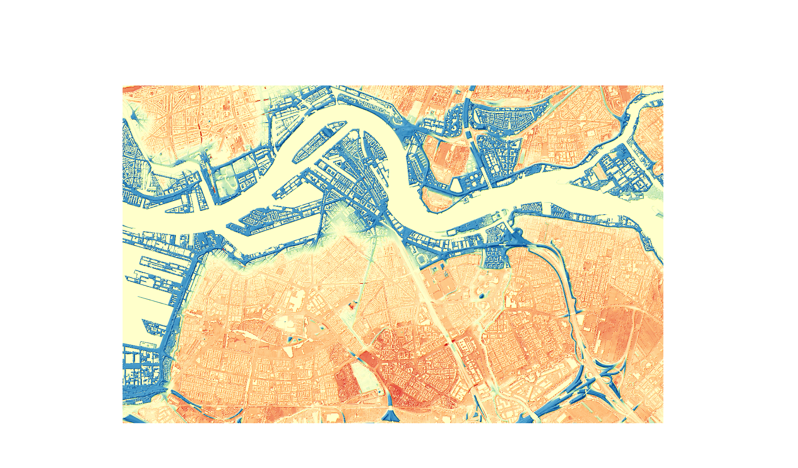

Digital Elevation Models
I made this map following a lab assignment. It is a Digital Terrain Model (DTM) of De Nieuwe Maas in Rotterdam. The colour scheme is a gradient from blue to red, with the midpoint being in white. The river within this gradient is seen to be at an elevation level of zero, indicating little change for the highly controlled environments of these rivers in the Netherlands. I chose to map Rotterdam because it is, first of all, one of my favourite cities in the Netherlands. Due to its metropolitan nature, I am extremely interested in the urban planning that went into constructing a city such as this. There has been a lot of thought put into its urbanizing nature as reflected through the controlled nature of its rivers.
.png)
Similarly, the map above is of the same region, but it is an RGB map of just the detailed aerial scan of Rotterdam. Here, we can see that the DTM aligns greatly with the RGB imaging, where the tall buildings further south are clearly illustrated in a dark red in the DTM